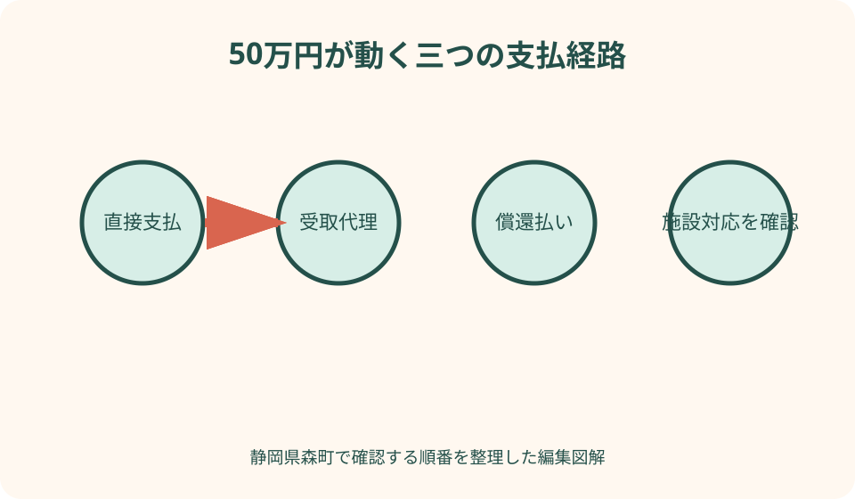
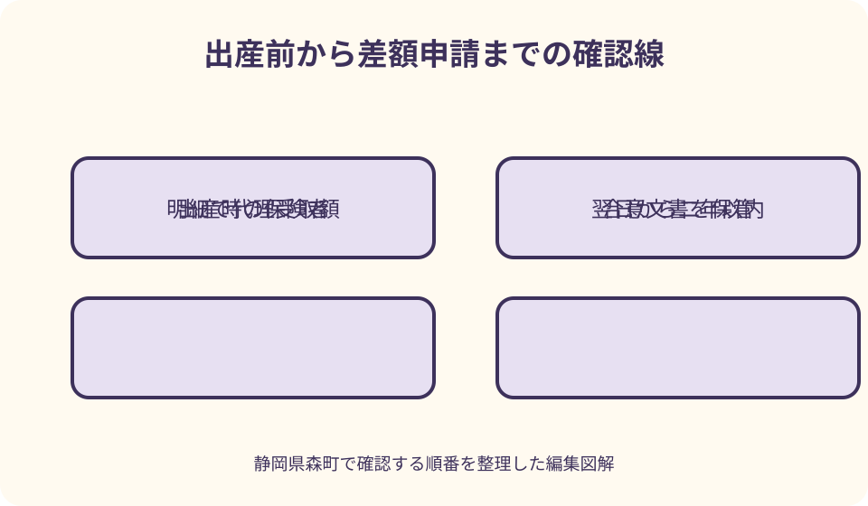

健康・医療・保険｜最終確認 2026-08-10
静岡県森町の出産育児一時金｜50万円・直接支払・差額申請を整理
静岡県森町の国民健康保険では、被保険者が出産したとき、原則50万円の出産育児一時金が支給されます。多くの分娩施設では保険者から施設へ直接支払う仕組みを使えるため、退院時に50万円全額を先に用意する制度ではありません。ただし、産科医療補償制度の対象か、退職後6か月以内か、出産費用が支給額を下回るかによって確認事項が変わります。出産前、入院時、退院後の三段階で整理します。

編集イラスト最初に結論：原則50万円を一児ごとに支給
森町公式の国民健康保険案内では、被保険者が出産したときの出産育児一時金は50万円です。出産費用の領収額にかかわらず、要件を満たす一児ごとの給付額として扱われます。
双子など多胎の場合は、厚生労働省の案内により胎児数分が支給されます。双子で両児が支給要件を満たすなら、原則額は50万円の二人分という考え方です。個別の支給額は加入保険へ確認します。
50万円が必ず妊婦本人の口座へ一括で振り込まれるわけではありません。直接支払制度を使うと、保険者が出産施設へ支払い、出産費用との差額だけを本人側が精算します。
確認の起点は出産予定日ではなく、実際に出産した時点の公的医療保険です。妊娠中に森町国保へ入っていても、出産前に勤務先の保険へ移ったなら、その時点の保険者を確認します。
50万円と48万8千円の違い
厚生労働省は、一児につき50万円を基本額として案内しています。一方、産科医療補償制度に加入していない医療機関等での出産など、同制度の加算対象とならない出産は48万8千円です。
差額の1万2千円は、出産方法の優劣や母子の状態を評価するものではありません。産科医療補償制度の掛金相当分が加算される出産かどうかによる制度上の違いです。
分娩予定施設が同制度へ加入しているだけで、すべての分娩が自動的に加算対象になるとは限りません。在胎週数などの条件があるため、施設が発行する領収・明細書の表示を確認します。
費用見積りを作るときは、50万円を無条件の入金額として置かず、施設へ『今回の分娩は加算対象の予定か』『直接支払制度を利用した場合の自己負担見込みはいくらか』と尋ねます。
妊娠12週以降の流産・死産も対象になり得る
森町公式ページは、妊娠12週以降の流産を出産育児一時金の対象に含めています。国の案内では支給要件を妊娠4か月、すなわち85日以上の出産としており、早産、死産、流産、一定要件の人工妊娠中絶も含まれます。
妊娠週数の数え方を本人が暦だけで判断すると、医療機関の記録とずれることがあります。医師や助産師が確認した妊娠期間が分かる書類を基に、森町国保年金係へ相談してください。
流産や死産の直後に給付手続を調べることは、心身に大きな負担となります。家族が連絡を代わる場合は、本人の意向を確認し、必要最小限の情報で町と医療機関へ照会します。
出生届がない場合でも、出産育児一時金の対象から直ちに外れるとは限りません。出産の事実と妊娠日数をどの資料で証明するかを、医療機関と森町へ確認することが大切です。
支払方法は三つある
厚生労働省は、支給と支払いの方法として、直接支払制度、受取代理制度、償還払い制度の三つを案内しています。どの方式を使えるかは出産施設によって異なります。
直接支払制度では、出産施設が世帯主などに代わって保険者へ請求し、一時金を直接受け取ります。本人側は、出産費用が支給額を超えた部分だけを退院時などに施設へ支払います。
受取代理制度では、本人側が事前に保険者へ申請し、出産後に施設が一時金を受け取ります。小規模施設など一定の届出をした施設で使われる方式なので、対応有無を早めに確認します。
償還払いでは、本人側が出産費用をいったん全額支払い、その後に加入保険へ一時金を請求します。まとまった資金が必要になるため、施設が直接支払に対応しないと分かった時点で森町へ相談します。
直接支払制度の流れ
直接支払制度を使う場合、出産前または入院時に施設から制度利用の説明を受け、代理契約に関する合意文書を交わします。口頭で利用希望を伝えるだけで完了したと思わず、交付された文書を保管します。
出産後、施設は一時金の範囲内で保険者へ請求します。出産費用が50万円を超える場合、超えた額は本人側が施設へ支払います。加算対象外なら比較する支給上限は48万8千円です。
出産費用が支給額より少なければ、施設は実費分を受け取り、残額は加入保険から本人側へ支給されます。自動振込か申請が必要か、森町からの案内を確認してください。
直接支払制度は、出産費用を値引きする仕組みではありません。保険者から支払われる一時金と、本人が施設へ支払う費用の流れを変え、退院時に準備する現金を抑える仕組みです。

費用が50万円未満なら差額を確認
例として、加算対象の出産費用が46万円で直接支払制度を利用した場合、施設への代理支払額は46万円となり、原則額50万円との差4万円が本人側への支給対象になります。
この例は計算の仕組みを示すもので、個別の決定額ではありません。医療機関の明細に記載された妊婦合計負担額、代理受取額、産科医療補償制度の対象表示を確認します。
国の実施要綱では、保険者が差額申請を案内することとされています。ただし、案内が届くまで待つだけでなく、退院後に領収・明細書を確認し、森町へ差額の手続を尋ねると漏れを防げます。
差額を受け取る口座、申請者、必要書類は森町の最新運用を確認します。領収書と明細書は別の書類であることが多いため、退院会計で両方が交付されたかを確かめてください。
費用が50万円を超えるとき
出産費用が原則額50万円を超えたときは、その超過分を本人側が施設へ支払います。50万円を超えた全額が高額療養費として戻るわけではありません。
正常分娩は一般に公的医療保険の療養の給付の対象外です。そのため、室料、食事、分娩介助などの費用を、通常の医療費と同じ自己負担割合だけで計算することはできません。
帝王切開など保険診療となる処置がある場合は、保険診療部分について高額療養費や限度額の仕組みが関係することがあります。自由診療部分と保険診療部分を明細書で分け、森町と施設へ確認します。
個室料、文書料、祝い膳などは、出産育児一時金の精算に含まれていても高額療養費の対象とは限りません。見積りでは『総額』だけでなく、保険診療とそれ以外の内訳を見ます。
出産前に加入保険を確定する
出産育児一時金は、出産した時点で加入している公的医療保険へ申請するのが原則です。森町国保へ加入予定でも、加入届が済んでいない場合は、資格取得日を国保年金係へ確認します。
婚姻、就職、退職、扶養認定、転居が出産予定日前後に重なる家庭は、資格の空白や重複を自己判断しないでください。各保険者へ取得日と喪失日を照会し、日付を一列にします。
マイナ保険証の画面反映が遅れていても、法的な資格日まで変わるとは限りません。出産施設の画面表示だけで保険者を決めず、資格確認書や資格取得証明などを用いて確認します。
直接支払制度の合意後に加入先が変わった場合は、早めに出産施設へ伝えます。古い保険者へ請求データが送られると調整に時間がかかるため、変更日と新しい保険者を共有してください。
退職後6か月以内の出産は選択肢を確認
厚生労働省の案内では、退職後6か月以内に出産した人は、一定要件の下で以前の勤務先の健康保険から一時金を受ける選択もできます。以前の保険へ継続して1年以上加入していたことが要件です。
この場合、出産時に森町国保へ加入していても、森町国保と以前の健康保険の両方から二重に受け取ることはできません。どちらへ申請するかを出産前に決める必要があります。
以前の健康保険には、法定額に加えて独自の付加給付がある場合があります。給付額、直接支払への対応、必要な資格喪失証明を旧保険者へ聞き、森町国保側にも選択を伝えます。
退職日は最終出勤日と同じとは限らず、資格喪失日は通常その翌日です。6か月の判定を自分だけで計算せず、旧保険者が発行する資格喪失日資料を基に確認してください。
申請期限は出産日の翌日から2年
厚生労働省のよくある質問では、出産育児一時金の申請期限は出産日の翌日から2年以内です。直接支払制度を使わなかった場合や差額請求がある場合は、期限を意識して早めに手続します。
流産・死産の場合も、出産日に当たる日と妊娠日数が重要です。心身が落ち着いてから動けるよう、医療機関の証明書と領収書を一つの封筒に入れ、家族が期限を記録します。
海外出産では、証明書の取得や翻訳に時間がかかります。帰国後に準備を始めるのではなく、滞在中に必要書類を加入保険へ確認し、現地医療機関へ発行を依頼します。
期限直前に書類不足へ気づいたら、全部そろうまで連絡を控えず森町国保年金係へ相談します。どの日を基準に、何をいつまでに提出するかを窓口回答で確定します。

必要書類を四つの箱で整理する
第一は、出産した人の保険資格を示す資料です。資格確認書、資格情報のお知らせ、マイナ保険証に関する情報など、森町が指定する物を確認します。
第二は、出産の事実と費用を示す資料です。医療機関等が発行した領収書、費用内訳の明細書、出産証明、流産・死産では妊娠日数が分かる証明などが候補になります。
第三は、支払方式を示す資料です。直接支払制度を利用した、または利用しなかったことを示す合意文書は、償還払い・差額申請の判断に使うため保管します。
第四は、申請者と振込先を確認する資料です。本人確認書類、世帯主や出産した人との関係、口座情報、代理なら委任関係について、森町が求める範囲を来庁前に聞きます。
海外で出産する場合
国の案内では、出産時点で有効な公的医療保険の資格があれば、海外出産も申請対象になり得ます。ただし国内の直接支払制度と同じ流れではなく、帰国後の申請が中心になります。
出生証明書、医療機関の領収書、出産の内容が分かる書類、日本語訳、渡航記録などを求められる可能性があります。森町が必要とする原本、翻訳者の記載、様式を出国前に確認します。
出産のためだけに一時帰国しない場合でも、森町国保の資格が継続しているか、海外転出の届出をしていないかによって判断が変わります。住民登録だけで受給資格を断定しません。
不正請求防止のため、保険者が医療機関へ照会する同意や渡航事実の確認を求める場合があります。現地書類を加工せず保管し、照会に時間がかかることも見込んで申請します。
森町の妊娠・出産支援と混同しない
森町には、母子健康手帳、妊婦健康診査費の助成、産後ケアなど、出産育児一時金とは別の支援があります。出産育児一時金を受ければこれらが一括で処理されるわけではありません。
2025年度からの『妊婦のための支援給付』も別制度です。森町では妊娠時と出産後の二回に分けた給付を案内していますが、国民健康保険の加入有無だけで判断するものではありません。
妊婦健診の受診票は、定められた検査への助成に使う物で、分娩費用へ50万円を充てる直接支払制度の文書ではありません。似た時期に受け取る書類を目的別に分けます。
遠方の分娩施設へ移動する妊産婦には、森町の交通費・宿泊費支援が関係する場合もあります。対象距離や要件があるため、出産育児一時金の自己負担計算とは別に確認します。
森町での通院・分娩計画に組み込む
森町内でも、三倉・天方など北部から分娩施設までの移動には時間がかかります。給付額の確認だけでなく、妊娠後期の移動手段、夜間連絡先、付添人、入院時の支払方法を一緒に決めます。
里帰り出産を選ぶ場合は、森町国保の窓口と町外の分娩施設の双方へ連絡します。施設が直接支払制度を扱うか、森町国保の資格情報をいつ提示するかを確認してください。
出産予定日は変わり得るため、家族の資金計画には余裕を持たせます。50万円を超える見込み額だけでなく、交通、宿泊、個室、家族の休業など保険給付外の費用も分けて計算します。
緊急搬送や予定外の帝王切開では、事前の見積りと請求内訳が変わります。母子の安全を最優先し、落ち着いた後に施設の医事担当と森町へ、保険診療部分と一時金の精算を確認します。
出産育児一時金の良い点
出産育児一時金の良い点は、公的医療保険の加入者に一児ごとのまとまった給付があり、正常分娩が通常の保険診療ではない場合にも出産費用の負担を軽くできることです。
直接支払制度を利用できれば、本人が50万円相当をいったん全額用意する必要がなくなります。出産直後の家族が、大きな立替えと後日の請求を同時に抱える負担を抑えられます。
出産費用が支給額を下回る場合も、差額を受け取れる仕組みがあります。施設への支払で消えて終わりではなく、明細と代理受取額を確認することで給付全体を把握できます。
妊娠85日以上の流産・死産も対象となり得る点は重要です。出生した子の育児費だけを支えるのではなく、出産に伴う身体的・経済的負担を公的医療保険が支える給付です。
森町の案内に注文したい点
注文したい点は、森町国保ページの『50万円』という短い記載だけでは、48万8千円となる場合、三つの支払方式、差額申請、期限が分からないことです。妊娠中に一連の流れを把握しにくい状態です。
直接支払制度を使う人が多くても、対応していない施設や制度を使わない選択があります。森町独自の申請書、必要書類、郵送可否を一か所に掲載すると、里帰り出産や海外出産にも役立ちます。
退職後6か月以内は旧健康保険を選べる可能性があるため、国保加入窓口で妊娠中と分かった時点に短い注意書きがあると二重請求や選択漏れを防げます。
流産・死産時の案内は、一般の出産祝い情報と同じ見せ方では届きにくいものです。必要な妊娠日数と相談窓口を、配慮ある表現で独立して示すことを期待します。
直接支払を使えないときの代案・結論
出産施設が直接支払制度に対応していない場合は、受取代理制度を利用できるかを尋ねます。施設が対象でなければ、償還払いを前提に全額支払の時期と森町への請求手順を確認します。
退院時の立替えが難しいと分かったら、支払直前まで黙って待たず、妊娠中に施設の相談員と森町国保年金係へ相談します。利用できる貸付や支払相談があるかは個別に確認してください。
出産後に領収書や合意文書が見当たらない場合は、施設へ再発行や証明が可能かを尋ねます。自己作成した数字で差額を請求せず、施設と保険者が照合できる正式資料をそろえます。
結論として、出産前に行うべきことは、出産時の保険者、施設の支払方式、加算対象の見込み、自己負担の見積りを一枚にすることです。出産後は領収・明細と代理受取額を照合し、差額や償還払いを期限内に申請します。
大石の視点：50万円より先に支払経路を見る
大石の視点では、『50万円もらえる』という言葉だけでは家計の準備になりません。誰の口座へ、いつ入るのか、施設へ直接行くのかを図にして初めて、退院日に必要な現金が見えます。
森町から町外の産科へ通う家庭では、分娩費だけでなく移動と付添いの費用が積み上がります。国保給付、森町の交通支援、自己負担を別々の行に置き、同じ50万円から全部出ると思わないことが大切です。
家族が準備表を作るなら、出産予定日、加入保険、直接支払の合意日、施設見積額、差額申請、口座の六項目で十分です。個人番号や詳細な診療情報を家族共有表へ過剰に書く必要はありません。
出産は予定どおりに進まないことがあります。制度を完璧に理解してから入院するより、母子の安全を優先した上で、領収書と合意文書を失わず、後から森町へ確認できる状態をつくる方が現実的です。
相談先を保険と母子支援に分ける
出産育児一時金、国保資格、差額申請の入口は、森町役場住民生活課国保年金係です。町公式の担当欄に掲載される電話番号と開庁時間を、連絡当日に確認します。
母子健康手帳、妊婦健診、産後ケア、妊婦のための支援給付は、健康こども課や森町こども家庭センターの案内を確認します。同じ出産に関する制度でも担当と要件は異なります。
分娩費用の見積り、直接支払制度の合意、入院時の預り金は、出産施設の医事担当へ尋ねます。森町が施設独自の個室料や支払日を決めるわけではありません。
退職後の旧保険を選ぶ可能性がある人は、旧勤務先の保険者にも確認します。問い合わせ日、回答者の部署、選択した保険者を記録し、出産施設へ同じ内容を伝えます。
まとめ：妊娠中と出産後の確認順
妊娠中は、出産予定施設が直接支払制度に対応するか、50万円の加算対象となる見込みか、出産費用の概算はいくらかを確認します。保険資格の変更予定も施設へ伝えます。
入院時は、合意文書の内容と保険者名を確認し、交付された控えを保管します。緊急時は手続より診療を優先し、家族が後で医事担当へ確認できるよう書類の所在を共有します。
退院時は、領収書と費用明細の両方を受け取り、妊婦合計負担額、代理受取額、産科医療補償制度の対象表示を見ます。50万円未満なら差額支給について森町へ確認します。
本稿は2026年8月10日時点の一次情報に基づきます。給付額、必要書類、施設の対応は変わり得るため、申請時には森町国保年金係、出産施設、厚生労働省の最新案内を優先してください。
公式情報・確認先
掲載内容は次の一次情報を基礎に整理しました。営業、料金、催し、交通は変わるため、出発前または手続き前にリンク先で最新情報を確認してください。
- 国民健康保険（静岡県森町、2026-08-10確認）
- 妊娠・出産（静岡県森町、2026-08-10確認）
- 妊婦のための支援給付（静岡県森町、2026-08-10確認）
- 妊産婦に対する遠方の産科医療機関等への交通費等支援事業（静岡県森町、2026-08-10確認）
- 出産育児一時金等について（厚生労働省、2026-08-10確認）
- 出産直後に使える制度・サービス（厚生労働省 出産なび、2026-08-10確認）
- 出産育児一時金等の医療機関等への直接支払制度 実施要綱（厚生労働省、2026-08-10確認）
- 国民健康保険の給付（静岡県、2026-08-10確認）